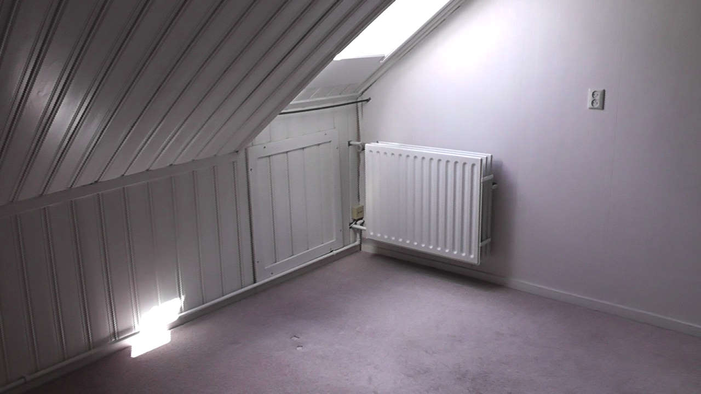
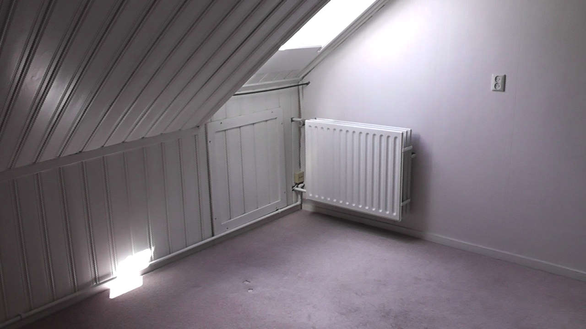

Sloopwerk is voltooid
10 Augustus, 2021


Het sloopwerk is vooltooid. Een container van 10 kubieke meter vol met hout en een tweede container met puin is half vol
Morgen, Woensdag 11 Augustus komt de dakkapel erop en twee dakramen in de kleine slaapkamers
Het is ook een beetje vakantie
9 Augustus, 2021


Donderdag wordt er mooi weer voorspeld dus de 'Pool-girls' zijn al druk bezig met voorbereidingen.
Alles natuurlijk wel een beetje tranquilo.
Veel handen maken licht werk
7 Augustus, 2021

Op onze tweede dag als bewoners van dit huis hebben we hulp gekregen van Liese en Ernst. Natuurlijk waren ook Yris, Hilko en Lotte van de partij.
Het vakmanschap van Ernst en zijn gereedschap kwamen goed van pas. Aan het eind van de dag was al het grote breekwerk gedaan en konden we zelf beginnen met het afvoeren van het puin
De nieuwe eigenaren
6 Augustus, 2021

 

Sinds vrijdag 6 augustus zijn wij de gelukkige eigenaren van dit huis in Escharen. Het is een boerderij uit 1912 dit in 1984 omgebouwd is tot 2 wooneenheden waarvan wij de voormalige stal gaan bewonen. Achter en naast het huis ligt een prachtige tuin met vijver en zwembad.
De komende weken gaan we verbouwen. Van de hele bovenverdieping gaan we de jaren-70 schrootjes verwijderen en wordt alles nieuw afgetimmerd. De achterzijde van het huis krijgt een dakkapel over de badkamer en een slaapkamer. Tevens komen er een nieuwe badkamer en keuken in.
Over ons
Wij zijn Frank en Sandra. Na 10 jaar Zwitserland en 17 jaar Malden hebben we nu een stekje gevonden op het Brabantse platteland. We houden van buiten zijn en tuinieren en verwachten dat we hier ons hart kunnen ophalen.
In deze blog proberen we bij te houden wat er zoal bij ons gebeurt.